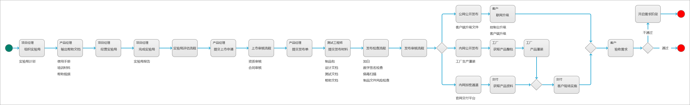
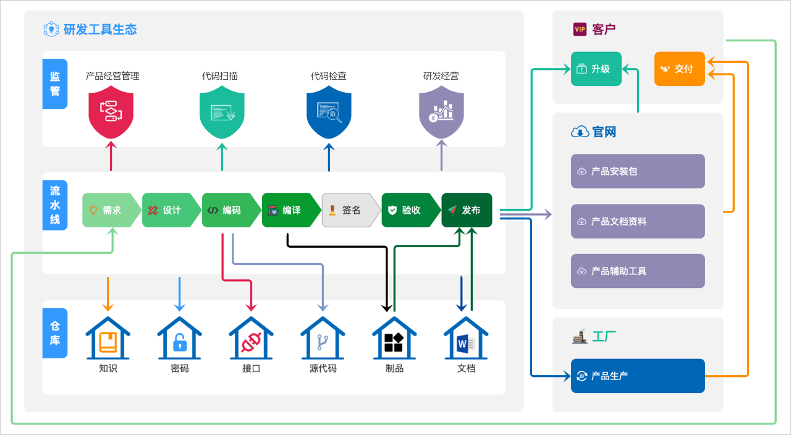

个人知识仓库
背景
随着工作经历的增长，我也参与了越来越多领域的工作，无论是ToC还是ToB，都有了解；参与的工作内容，也不仅限于产品经理相关工作，有时候还会涉及到运营、推广、项目管理等工作。
随着经验越来越丰富，我发现自己对于过往参与的这些工作缺乏回顾和总结，这就导致了一些问题：
- 工作经历、项目经历缺少整理，时间长了对于过往的一些经历产生了遗忘
- 专业技能、专业知识缺少整合，涉及到多个领域的专业知识的时候，容易产生混乱
- 工作中学习到的比较有效的方法理论，缺少整理，最终不能很好地在自己工作、生活中落地
目的
在我发现了上述问题后，我尝试了比较多的方法来解决这些问题，例如：我会将过往工作中编写的产品文档专门保存到一个特定的目录。
但这样并没有太大用处，因为自保存以后，我就再也不会去打开查看，更不用说去进行反思和总结了。
所以，在经历了许多的尝试以后，我决定，使用书籍编写的方式，来对自己工作中涉及到的一些经历、经验、方法等内容，进行总结和记录。
当然，这是一个持续进行的事情。
产品设计
说在前面
在开始之前，我想先说明一下我对于产品经理这个角色的理解。
因为我一直从事ToB产品经理，所以，这些理解放到ToC可能并不适用。
我认为，一个合格的产品经理，应该具备两个方面的能力：
- 基础能力：产品设计能力
- 业务能力：领域的解决方案
我举个例子：
- 产品设计能力：画产品原型、写需求文档、需求生命周期管理等
- 领域解决方案：电商领域的解决方案、网络安全领域解决方案、持续集成领域解决方案等
根据我实际的观察，我发现，实际工作中产品经理会走向两个极端：
- 产品设计：逻辑能力较好、画原型能力较好、文档能力较好，但是，
缺少行业领域标签，对每个领域都一知半解 - 解决方案：对于某个/某几个行业领域研究很透彻，但是，
无法很好地将自己对于业务领域的解决方案转换为产品设计方案
所以，我会希望自己在从事产品经理这个职业的时候：
- 不断夯实产品设计相关的基础能力
- 了解较多的业务领域，锻炼自己在不同业务领域之间快速切换的能力
- 至少对1个业务领域有比较深入的研究，可以提供出有效的行业解决方案
所以，我计划通过以下两个方面（章节）来整理自己从事产品经理期间的一些知识和方法：
写到这里，我想到之前从事PaaS平台产品设计的工作，就存在两个极端：
- PaaS平台的产品经理、架构师，不关心业务，只关注逻辑、能力、抽象
- SaaS平台的产品经理，只关注业务、流程，不关注PaaS平台的能力、抽象、兼容等
最终导致的结果就是：互相不认可，合作失败。
产品设计
产品设计方法
通用设计方案
产品设计工具
业务领域模型
产品原型
业务领域
研发工具建设经验总结
概述
此目录下记录的内容，是本人此前在工作中进行研发工具建设的经历、经验总结。
主线内容是介绍研发工具的建设过程，同时也会涉及到研发流程建设相关的内容，以及一些管理制度、考核制度相关的内容，用于阐述研发工具建设过程中，一些决策/方向/方案的动机和目的。
说明
在建设公司研发工具的时候，实际的规划、落地方案受很多因素影响，包括但不限于：
- 公司实际的产品业务
- 公司所处阶段、规模
- 公司经营管理策略
- 公司资质审查目标
基于此，我们需要了解一个事实：公司的研发工具建设，需要结合公司实际情况来规划和落地，通常没有行业通用方案。
所以，我在此处记录的研发工具建设经验，并不一定适用于全部业务场景。
目录
产品研发模式
产品经营
在介绍实际的产品研发模式之前，先对产品经营管理的内容进行说明，这样可以更好地推导出产品研发模式的基础。
上图所示，是产品经营中涉及到的几个关键概念，以及每个概念各自对应的领域，下面分别进行说明：
- 研发项目
- 在公司里，组织资源完成一个事情，都需要通过项目来完成，申请项目→分配资源→开展工作→结果验收→结项
- 产品研发工作也不例外，一个产品的每一个迭代，都需要立项，针对产品研发工作，有单独的项目类型：研发项目
- 产品研发相关的工作，都要归属于特定的研发项目中，目的是
通过项目成本来统计产品研发成本
- 产品型号
- 这个概念主要是针对产品售卖而提出的，在实际售卖产品时，都是以产品型号在进行售卖
- 产品型号由不同的软件、硬件、服务组成，例如：型号_1的组成为
3.0.0.1090版本软件、4GB内存、免费升级特征库 - 产品实际售卖产生的收入，都跟产品型号直接关联
- 产品
- 这个概念主要用于产品经营管理
- 一方面用于产品相关的资质证书管理
- 另一方面，它是连接成本（研发项目）和收入（产品型号）的桥梁，
通过产品可以直观分析产品的净收益
产品研发
产品版本和研发项目
基于前面的内容，我们已经清楚一个事实：产品研发工作，一定会通过申请研发项目的方式来组织。
实际的执行方案，如上图所示：
- 一个产品，会发布很多个版本
- 每个版本，都会对应唯一一个研发项目
说明：无论是标准主线版本，还是定制开发版本，都是按照这个规则来处理。
到这里，其实会发现，通过这样的方式，会导致流程很重，研发效率很低。
在实际执行时，有以下方法解决该问题：
- 研发项目分等级，等级越低，项目所需要执行的流程越简单
- 客户端产品通常一个版本的需求一起发布和交付，服务端产品则可以单个需求发布
产品研发人效主导的研发模式
在上面，我们看到了产品、版本、研发项目三个对象之间的关系，也基本清楚了产品研发实际是如何操作，但是这里面还没有涉及到人的参与，所以，还不算完整的研发模式。
在介绍人如何参与到产品研发之前，先介绍一下关于产品研发人效的一些内容，毕竟这个概念一度主导了公司的产品研发模式。
人效的定义
人效这个概念不难理解，就是：单位人力在单位时间内的产出。
通俗地讲：在公司内部，特指产品研发领域，一个员工在最小单位的标准工时内的工作产出。
- 研发领域的员工：主要指
产品经理、研发工程师、测试工程师这三个角色 - 最小单位的标准工时：一般是8小时（1天所要求的考勤时间）
- 工作产出：度量维度很多，代码行数、文档行数、用例数等
公司的目的
每个公司对于人效的要求是存在差异的，这跟公司所处的经营阶段和规模有关。
例如：公司计划上市，那么就需要提高公司的人效，达到外部审核要求。
提高人效
基于人效的定义，就可以很简单地得出一个结论，要提高公司人效，只要让员工做更多事情、工作更加饱和，就可以了。
但是，公司存在一个现状：每个产品的研发团队是固定的，产品的需求也不会持续处于旺盛的状态，所以，每个产品研发团队的工作其实并不会持续饱和。
- 需求旺盛的时候，产品研发团队工作较为饱和
- 需求不旺盛的时候，产品研发团队大部分员工的工作都不饱和
从公司经营的角度来看，这种情况导致了公司人效不高的情况发生，那么，公司就会通过一些经营策略来解决这个问题。
-
所有的产品经理、研发工程师、测试工程师，从业务线抽离，成立公共资源部门
-
业务线进行产品研发时，先进行项目申请，通过后再从公共资源部门分配研发资源
-
研发资源的分配，不是按人分配，而是人日，例如：员工A，投入项目A总计10人日、项目B总计10人日，只要实际投入不超过该计划就行，具体如何执行，依据项目实际情况来处理，一旦在项目A的投入达到了10人日，员工A便不再参与项目A
项目计划的最小单位是人日，也即：1人日，1个人投入1个工作日，至于这个工作日投入几个小时，不在考虑范围内。
基于这样的经营策略，公司的人效是否得到了提升呢？
- 在这样的经营模式下，产品研发领域的绝大部分员工，基本上都是同时并行多个项目，工作安排的很满、很饱和
- 如果工作无法按照项目计划来完成（这是个大概率事件），那么员工需要通过加班来完成
- 一个工作日，无论工作多长时间，都只按照标准工时8小时进行
核算统计，例如：员工A，1个工作日总计工作了12个小时（8标准工时+4加班工时），实际产出也是12个小时的产出，但是最终核算会把这12个小时的产出核算为8个小时的产出 排除员工加班的情况，人效相较此前，有提升；考虑到实际加班的情况，人效提升更多
基于这个原理，疫情期间，大部分员工从955变成了007，所以，公司统计得到结论：疫情期间，公司员工人效得到了空前的提升。
人效主导的研发模式

上图所示，就是公司最终稳定运行的研发模式：
- 产品的每个新版本都要进行立项
- 每个项目从公共资源池分配资源
- 每个研发资源同时参与多个产品项目的开发
工具和流程的关系
问题
在2019年之前，公司里研发工具建设和研发流程建设，是两个团队在处理，而且彼此之间没有任何沟通交流，经过差不多1年时间的踩坑，各自都发现了一些问题。
研发流程建设遇到的问题：
- 规划的研发流程对于业务线来说，太过于虚无缥缈，没有实际的落地方案
- 只能通过培训讲解的方式来推进研发流程落地，实际效果很差
- 缺乏反馈，也不能通过一些实际数据来评估研发流程的运行效果
研发工具建设遇到的问题：
- 工具建设缺乏整体规划，建设方向不明确
- 研发工具落地难度较大
- 工具之间彼此独立，几乎没有任何联动
- 业务线反馈工具使用效率不高、安全性差
解决
从2019年年初开始，研发工具团队和研发流程团队开始配合，各取所需的同时，又彼此帮助。
研发工具对于研发流程建设的支持：
- 在系统里固化研发流程，推进研发流程落地
- 将产品研发相关的规范（例如：制品命名规范）嵌入到工具中，保证研发规范的落地执行
- 为研发流程度量考核提供真实的用户使用数据
- 研发工具的使用情况会反推研发流程的优化改进
研发流程对于研发工具建设的支持：
- 研发流程的规划，帮助研发工具建设明确后续方向、建设优先级
- 根据研发流程，不同的工具系统之间进行了业务、数据的联动
- 参考研发流程的度量体系，各领域的研发工具也提供了多维度管理报表和看板
关系

研发流程和研发工具之间的关系，大致可以总结为：
- 相互促进
- 相互依赖
- 相互服务
我通常这么描述：
- 研发流程：运营能力
- 研发工具：产品能力
研发工具
概述
我是2018年到QAX开始从事研发工具建设相关工作，一直到2020年，对于这期间的研发工具建设，我总结为3个阶段：
- 研发工具：2018年，整个研发工具建没有团队专职管理，研发工具部分核心能力处于缺失状态，已有的研发工具大部分都是业务线自建
- 研发生态：2019年，研发工具能力建设基本完成，同时跟研发流程形成配合，不同研发工具之间也有数据、业务的联动，并且，公司业务全面迁移到新的研发生态
- 研发效能：2020年，基于工具生态底层能力，主打产品研发效能的提升，推出效能平台、度量平台等应用
这篇文章，我主要记录在2018年，QAX研发工具、研发流程的现状，以及当时遇到的各种问题。
研发流程
在2018年的时候，公司已经有专门的研发流程管理部门，专职负责公司研发流程的规划、推广、落地、持续改进等工作。
但是，由于团队成立时间不长，因此，在2018年研发流程团队基本处于探索阶段，一方面学习国内外厂商的优秀实践，一方面在公司内部试点，并没有实际提出可执行的研发流程管理方案。
所以，在这段时间，研发流程基本处于缺失状态；业务线在进行产品研发的时候，也没有规范和流程进行指导、约束，基本上处于随心所欲的状态。
下面列举一些当时的混乱场景：
- 产品A，某次版本的版本号为4位，某次版本的版本号为2位
- 产品A版本3.0.0.1009升级包，研发工程师A邮件发给一线交付，同时，产品经理A用网盘提供给客户
- 需求开发完成，交付验收的时候，发现需求有变更，导致需求延期
研发工具
在2018年上半年，公司还没有专门的研发工具建设团队，直到下半年，才组织一个团队，来专职负责研发工具的建设、推广、改进、日常维护等工作。
所以，其实在2018年一整年，公司所有的业务线，都是自己搞定自己所需要的研发工具，或者，直接人工解决。
下面列举一下当时公司产品研发过程中各个场景的研发工具状况：
产品管理
- 申请新产品：邮件申请
- 审核新产品：邮件审核
- 管理产品信息：Excel
项目管理
- 申请新项目：邮件申请
- 审核新项目：邮件审核
- 项目信息管理：Excel
需求管理
- JIRA系统
代码管理
- SVN（业务线自建）
代码评审
- Phabricator
构建编译
- Qihoo Build（自研构建工具）
数字签名
- 签名工具（可执行程序）
- 研发下载制品到本地，在本地运行签名工具，进行签名
提测
- 邮件提测（附件为提测包）
测试
- 测试工程师下载邮件里的提测包到本地
- 测试工程师手动部署提测包到测试环境
- Bug管理：JIRA
- 用例管理：TestLink
制品管理
- SFTP（业务线自建）
发布
- CDN：邮件发送发布包给CDN团队处理
- 工厂：移动硬盘、U盘
- 一线：网盘、邮件、U盘、移动硬盘
存在的问题
下面从不同的维度来说明当时的研发工具存在的问题。
经营管理
- 过程管理混乱；例如：产品已经发布交付了，最后才补充产品资料和立项资料
- 过程文档缺失；例如：接口文档，没有统一的地方管理，需求开发完，研发就把文档删掉了
- 数字资产管理不安全、不全面；例如：Excel管理产品信息，容易丢失，或者，更新不及时/错误
- 整个产品研发过程不可追溯，例如：发布的文件带病毒，无法追溯到该文件由谁测试、由谁打包
- 产品研发成本不可度量
产品研发交付
- 效率低：整个产品研发过程，大量的事情需要人工手动处理，导致产品研发、交付的效率不高
- 不安全：制品文件多次落地，存在篡改可能性，并且交付渠道不统一，也存在安全风险
- 事故率高：因为过程全靠人来衔接，任何一环出问题，都会导致生产事故
- 过程不可管理：即使同一个产品团队，两次需求开发的实际流程都存在差异，过程不可管理
产品研发项目成员
- 工作效率低：很多重复性的活动需要手动处理，只能投入很少的实际进行创造性工作
- 上手难度大：没有配套的工具和流程，导致一个研发新人到公司后，上手工作的难度较大
- 工作价值低：因为过程混乱带来的大量返工，导致工作产出价值不高，缺乏自我成就感
研发生态
概述
从2018年研发工具状况介绍中，可以了解到当时整个公司研发工具存在的问题，那么，为了解决这些问题，从2018年年底，我们团队就开始去规划整个研发工具的建设方向。
一方面，团队内部在持续的建设研发工具的基础能力。
另一方面，我们也在跟研发流程管理的团队持续沟通，希望可以从研发流程的角度来探索研发工具的规划方向。
也是从这个时候开始，研发流程和研发工具才开始逐步配合。
建设阶段
整个研发生态的建设，持续了1整年，到2019年底才基本完成。
我把整个建设过程分为4个阶段：
- 基础能力建设：补全研发工具应该具备的基础能力、核心能力
- 基础能力完善：基于研发流程来完善研发工具基础能力
- 研发工具联动：基于研发流程的指导，通过脚本、二次开发等方式，来实现不同研发工具之间的数据联动、业务联动
- 经营管理工具：基于研发流程和研发规范的指导，针对公司管理层（领导、管理部门）提供经营管理工具，对整个产品研发过程进行管控
从上面4个阶段，可以看出，研发流程对于研发工具的建设，起到了很重要的作用。
建设成果
在2019年底的时候，整个研发工具生态基本建设完成。
之所以在描述中加入“生态”，是因为研发工具的能力已经基本完善，同时，各个工具也不再是孤岛，彼此之间支持互动，所以，我们从此时开始，就将其称之为研发工具生态。
主要的成果：
- 研发工具基本能力、核心能力完善
- 研发工具与研发流程紧密配合
- 研发工具之间支持自动化，业务、数据支持联动
- 公司业务全面迁移到新的研发工具生态
目录
研发流程2.0
核心思想
整个研发流程的核心思想，是集成产品开发（Integrated Product Development），简称IPD。
这是一套标准化的产品产品开发模式，用于指导产品的整个生产过程。
整体流程
在前面的文章里提到过，一个标准的研发流程/模式，并不一定可以适用于所有公司，IPD也是如此。
研发流程管理部，以IPD为核心，结合公司实际业务情况，提出了项目开发流程，如下图所示：
立项阶段的主要活动：
- 市场调研
- 编写立项合同
- 立项决策
概念阶段的主要活动：
- 需求收集、分析
- 技术预研
- 概念阶段评审
计划阶段主要活动：
- 产品规划、设计、文档
- 技术架构设计
- 设计方案评审（产品、技术）
- 项目计划制定、评审
开发阶段主要活动：
- 技术详细设计
- 编码
- CodeReview
验证阶段主要活动：
- 验收、提测、测试、回归
- 编写测试用例、测试报告
发布阶段主要活动：
- 实验局
- CRM信息更新、ERP信息更新
- 营销材料
- 上市决策
生命周期阶段主要活动：
- 运营跟进
- 结项
说明：以上阶段活动是研发流程管理团队结合公司实际业务发布的项目开发流程，不等于标准的IPD流程。
阶段子流程
下面分别介绍项目研发流程每个阶段对应的子流程，也就是实际的产品研发过程中执行的流程。
立项阶段
上图所示，为新项目立项申请的流程，其中，具体的审核环节已经省略。
在产品研发模式这篇文章里，有说明产品的每个版本和研发项目是1对1的关系，所以，每个研发项目也都要有关联的产品，在立项申请时，如果其关联的产品不存在，那么说明本次立项开发的是一个新产品，就需要先进行新产品申请。
如果产品已经存在于产品库，那么直接走立项申请流程即可。
概念阶段

在概念阶段，主要是产品经理对于需求进行处理，最终输出经过业务需求方、项目团队确认的需求规划方案。
计划阶段
在计划阶段，产品经理先输出概要设计方案，主要包括：用户场景、需求用例、领域分析等内容。
基于产品经理输出的概要设计方案，产品经理需要进一步输出详细的产品设计方案，包括：产品原型、产品文档等内容；与此同时，项目的研发负责人需要基于产品经理的概要设计方案进行技术架构设计。
在产品经理的详细设计方案和研发负责人的技术架构设计方案都确认后，实际进行需求研发的工程师会进行详细的技术方案设计，包括：接口设计、数据库设计等。同时，项目经理也会制定详细的项目计划，包括项目每个阶段计划的起止时间、计划的资源投入等。
技术研发方案确定后，还需要去更新产品的配置管理，例如：技术实现方案，计划了10个可独立构建部署的组件，那么就会给这10个组件分别建立各自对应的代码库。
说明：通常来说，测试用例、测试计划，也会在设计环节来展开，但是由于公司实际运营的一些情况，导致测试相关的工作全部都在验证阶段来完成。
开发阶段

在开发阶段，研发工程师在开发每个需求的时候，需要单独拉一个需求分支进行开发；代码编写完成后，需要提交至公司统一的源代码仓库。
代码提交完成后，需要根据项目的等级，来判断是否要执行代码扫描，如果需要执行，则研发工程师到SonarQube里执行扫描（如果没有Sonar项目，则需要单独申请），扫描结果出来后，如果有阻断类问题，则需要修复阻断类问题。
所有的需求分支，在合并前都需要进行CodeReview，这个活动有研发工程师组织发起。
CodeReview通过后，研发工程师还需要编写并入库相关的过程文档，包括：接口文档、设计文档、配置部署文档等。这些文档一方面会归档到项目文档库，另一方面会随着产品包一起交付给客户。
在需求开发阶段的最后，研发工程师需要提交编译构建任务，执行构建，并将得到的制品文件，连同之前的过程文档和源代码，一起提交给研发负责人进行验收。如果是客户端产品，那么编译构建完成后，研发工程师还需要对制品文件进行数字签名。
验证阶段
在验证阶段，主要是项目的研发负责人提测需求，然后测试工程师拟制测试用例、测试计划，然后开始进行需求测试；测试过程中发现的BUG需要提交到项目所属产品对应的BUG库，由研发工程师进行修复；当测试结果达到要求时（例如：无P0、P1BUG），测试工程师就可以提交测试结果，由项目关键角色进行验收。
测试工程师提交的测试结果，需要包括：测试用例、测试计划、测试报告；这些材料最终也会随着产品包一起交付给客户。
发布阶段

发布阶段主要包括两个部分：实验局、正式发布。
实验局，就是组织小规模试运营，收集问题、处理问题，保证最后的正式发布不会出问题。
正式发布，则是将产品包正式交付给客户，同时，还要讲过程文档一起交付，例如：使用手册、测试报告等。
最后客户会进行需求验收，如果验收通过，那么交付成功，如果交付失败，则需要重新开启需求阶段。
理论上来说，发布和交付应该区分为两个阶段，但由于公司实际经营情况，发布和交付没有进行严格的区分，都统一到了一起。
生命周期阶段
项目生命周期阶段的子流程如上图所示，项目进入该阶段，表示项目已经成功通过了客户的验收。
在这个阶段，还需要对项目进行一段时间的运营，主要跟进和收集客户的使用情况，如果客户有反馈，那么产品经理需要评估反馈内容；如果没有反馈，或者反馈的意见不是需求和BUG，那么，项目经理就可以按照计划关闭迭代，结项。
研发工具2.0
说明
在研发生态介绍这篇文章里，我将研发2019年研发工具的建设总结为4个阶段。
在这里，我将详细记录每个阶段的建设情况。
不同阶段建设情况
阶段_1：基础能力建设
阶段目标：这个阶段的目标，是基于公司的研发工具现状，来补全缺失的基础能力/工具。
在2018年研发工具状态介绍中，我介绍了2018年的时候公司研发工具的现状，可以看到，很多基础工具和能力都是缺失的，所以，我们在第一阶段，没有扩展新的业务场景，而且基于现有业务场景补全工具能力。
| 场景 | 2018年的工具 | 2019年1阶段工具建设方案 | 工具来源 |
|---|---|---|---|
| 产品管理-申请 | 邮件 | JIRA | 采购 |
| 产品管理-审核 | 邮件 | JIRA | 采购 |
| 产品管理-管理 | Excel | PBI（产品基础数据库） | 自研 |
| 项目管理-申请 | 邮件 | JIRA | 采购 |
| 项目管理-审核 | 邮件 | JIRA | 采购 |
| 需求管理 | JIRA | JIRA | 采购 |
| 代码管理 | SVN | Gitlab | 采购 |
| CodeReview | Phabricator | Gerrit | 采购 |
| 构建编译 | Qihoo Build | Jenkins | 采购 |
| 数字签名 | 本地签名工具 | 签名服务 | 自研 |
| 提测 | 邮件 | 提测系统 | 自研 |
| 测试 | JIRA、TestLink | 保持不变 | 无 |
| 制品管理 | SFTP | Artifactory | 采购 |
| 发布-公网公开渠道 | 无 | 自建CDN | 自研 |
| 发布-内网公开渠道 | 无 | 自建S3 | 自研 |
| 发布-内网加密渠道 | 无 | 发布交付平台 | 自研 |
| 发布管理 | 无 | 发布平台 | 自研 |
| 工厂生产 | 无 | 生产系统 | 自研 |
阶段_2：基础能力完善
在第一阶段完成后，我们计划开始扩展新的业务场景，以不断完善现在的研发工具。
为了明确新的、合理的业务场景，我们主要从以下两个方面来梳理：
- 收集所有业务线现有的产品研发生产流程
- 收集研发流程管理部对于公司统一研发流程的规划
基于上述两个方面的内容，我们在第2阶段确定了产生研发生产的主体流程，如下图所示：

基于上面的产品研发生产流程规划，我们新增了以下业务场景和研发工具：
| 场景 | 研发工具 | 来源 |
|---|---|---|
| 知识管理 | Confluence | 采购 |
| 接口管理 | Eolinker | 采购 |
| 代码仓库分级 | Gitlab分级部署 | 采购 |
| 文档管理 | 基于ISO9001的文档管理系统 | 自研 |
| 密码管理 | PassBolt | 采购 |
| 代码扫描 | SonarQube | 采购 |
在这个阶段，我们还对项目的需求管理工具进行了调整：
- 需求管理一直在JIRA上处理
- 研发流程管理部门提出规范：每个需求，开发的时候要单独拉分支进行开发
- 基于此，我们在这个阶段将需求管理前移到了Gitlab，使用Gitlab Issue来管理，因为Gitlab支持通过Issue直接拉取分支
阶段_3：研发工具联动
公司的研发工具，从2018年开始，一直到第2阶段建设完成，其实每个工具彼此之间都是独立的，无论是业务还是数据，都不互通。
这种情况在当时导致了一些问题：
- 工程师在实际开发过程中，需要手动处理很多重复性工作，效率低，并且过程容易出错
- 同一个需求开发，不同系统里的数据一致性得不到保障，后期统计分析无法开展
为了解决这个问题，我们在这阶段主要解决不同工具之间对接的问题，主要有以下一些业务场景：
- 提交代码后自动触发代码扫描
- 合并分支时自动触发CodeReview
- 提交代码后自动触发编译构建
- 编译制品自动入库
- 编译任务完成后自动触发签名服务
- 签名成功后自动触发提测任务
- 测试通过后自动触发制品检查和安全扫描
- 制品检查通过后自动触发发布任务
阶段_4：经营管理工具
在第3阶段建设完成后，基于公司经营管理提出的需求，我们需要提供整个产品研发生产过程中的一些数据，来支持公司经营管理分析，所以，在阶段4，主要是基于产品研发流水线，自研了产品研发经营管理平台。
在研发模式介绍一文中，有说明公司的研发模式是由人效主导的，那我们在阶段4建设的研发经营管理平台，其实就是用来管理人效的，它主要解决以下一些场景：
- 项目成本管理
- 项目资源管理
- 项目计划管理
- 团队资源流向分析
- 公司、部门、项目、个人，维度的人效分析
- 财务核算管理
最终效果

上图所示，是整个研发工具生态的最终形态，左侧公司内网环境的工具生态，右侧为公网环境下的生产和交付场景。
研发工具生态，除了基础的工具能力较之前更加完善以外，还融入了研发流程，并且，不同工具之间也支持自动化的对接，一方面提升了工程师实际工作的效率，另一方面也为公司经营管理更好地提供了数据支撑。
问题总结
在研发工具生态建设完成后，公司的整个研发工具存在的问题，相对2018年有所减少，但是实际运行中还是存在一些问题，下面列举当时业务线关注度较高的几个问题：
生产安全性低
在研发过程中，制品文件存在落地的情况，例如：测试工程师需要手动将制品文件下载到本地，进行部署测试，再手动上传发布系统。
因为这个情况，导致过几次生产事故，其中有一次为：测试工程师下载制品文件到本地后，在本地使用第三方小工具检查，最终该制品文件发布到了客户侧的控制台，导致客户侧控制台感染病毒，造成系统瘫痪。
生产效率低
虽然整个研发生态有很多研发工具来解决各种业务场景，并且工具之间也实现了部分自动化，但是生产效率仍然不高，这是因为：不同工具之间的自动化，是通过脚本来简单处理的，执行效率低，故障率较高，几乎不支持多任务并行处理。
员工工作效率低、上手难度高
我们提供了很多研发工具，但实际上，工程师开发一个需求，需要实际切换到不同的系统里提交、处理各种场景，这样就导致了两个问题：
- 系统之间的切换过程很繁琐，导致工作效率不高
- 工程师需要学习每个工具系统的使用，上手难度较大
经营管理程度不高
在实际的产品研发生产过程中，不同阶段的数据，分散在不同的工具系统里，虽然我们在不同的系统里都加入了关联字段，但是实际进行经营管理活动时，经营管理所需要的数据无法直接提供，都需要投入研发资源专门获取、清洗、处理数据，最终才可以交付经营管理使用。
例如：在提测系统里，加入了一个字段“编译任务ID”，实际进行经营分析时，需要通过该字段去查询Jenkins里对应的任务，再查询任务相关数据。
研发效能
动机
经过2019年一整年的建设，我们基本上完善了研发工具生态的基础能力，涉及到的业务场景基本上也都有对应的工具支持，但是，正如研发工具生态存在的问题中所提到的，研发工具生态还是存在很多问题。
这个时候的研发工具生态，处于一个比较尴尬的状态：
- 向下的产品研发生产：每个业务场景都解决了部分基础问题，但是解决问题的方式并不是很好，而且还有很多问题没有得到解决
- 向上的生产经营管理：解决了部分经营管理的需求，但是大部分场景没有得到解决，而且，解决经营管理需求的前提是周期性地投入大量的研发人力
所以，最后的结果就是：向上、向下都投入了较多努力，也解决了部分问题，但是评价都不太好。
每个需求方提出的场景，都只解决到了50分，最终就是所有需求方都评价不好。
思考
思考_1
关于产品规划原则的思考。
我们之前进行规划和建设，大概是下面这样的逻辑：
- 有10个需求方提出需求，我们就同时解决10个需求方的问题
- 由于时间、资源有限，这10个需求方的问题，基本上都只能解决一部分，差不多到50分
- 10个需求方对我们的工作评价都不高，因为他们各自的问题都没有很好地得到解决
要解决这个问题，有两个方式：
- 增加资源投入
- 评估优先级，先把优先级高的需求处理完善
方案1基本不可能，所以就采用方案2，在解决每个需求的时候，尽量解决到80分。
思考_2
关于研发工具生态的建设方向思考。
现在的研发工具现状，大概如下：
- 每个工具基本上只能
各自独立地解决其对应的、特定的业务场景 - 每个研发工具，要么独立封闭，要么能跟上下游工具对接，不能做更多的事情
而我们的产品研发过程，是一个完整的、不同角色进行协同合作的过程，这样就引发了一个矛盾：
- 研发工具的能力是分散的
- 产品研发的过程是协同的
为了解决这个问题，我们也调研了一些大公司的解决方案（例如：阿里云效），也学习了我们公司内部一些优秀的业务实践，最终得出的结论是：需要基于研发工具生态的能力，自建协同办公平台。
目标
在这个阶段，我们从一开始就确定了目标：提升研发效能（不是人效）。
- 研发人员工作效率
- 产品研发生产效率
我们决定暂时抛弃向上的经营管理相关需求，优先把实际生产的效率提升起来。
因为经营管理的数据、场景都是基于实际生产展开的，如果底层生产做的不好，那么经营管理意义也不大。
效能平台
概述
这篇文章，主要记录此前建设效能平台部分关键内容，我个人比较推崇这样的设计理念和方法。
平台目标
效能平台的目标，和研发效能的目标是一致的：
P0提升产品研发生产过程中，产品研发团队人员的效率P0提升产品研发生产整个过程的效率
设计思路
在从事研发工具建设之前，我从事了一段时间PaaS平台的规划和设计工作，当时PaaS平台的设计思路是：底层PaaS平台运行若干微服务，提供各种基础能力；基于PaaS平台的能力，在PaaS平台上搭建SaaS应用，用于解决实际业务需求场景。
在设计效能平台的时候，就借鉴了这个思路，如下图所示：

下面对这个设计思路进行简单地说明：
- 现有的研发工具生态作为底层服务，提供基础能力支持，每个工具都独立运行，可以独立使用
- 基于研发工具生态，搭建了数据中台和能力中台，聚合了底层研发工具的全部数据、接口能力
- 基于中台，可以使用底层研发工具生态的全部数据和能力，然后建设各种应用
- 效能平台：产品研发测试团队协同工作站
- 度量平台：经营质量风险分析度量应用
- 开放平台：不严格的开放平台，部分中台能力以Open-API的形式开放，支持业务线对接
本文主要介绍上图中：【研发效能-应用】层的效能平台相关内容。
对象设计
上图所示，为效能平台的关键对象，以及对象之间的关系。
从对象关系可以看出，整个效能平台的主线，是围绕产品研发过程中项目团队内部的协同来展开的。
流程设计
效能平台里的流程设计，几乎是对照研发流程设计来完成的，但是，为了提升效率和安全，在实际规划效能平台的流程时，制定了以下原则：
- 不需要人工处理的活动，由系统自动完成
- 人工可以处理、系统也可以处理的活动，由系统自动完成
- 系统要引导项目团队成员完成后续工作项，降低上手成本
基于上述原则，我们最终在效能平台里落地的流程，与研发流程设计中的流程规划存在部分出入，下面具体介绍一下效能平台里的流程设计。
对象生命周期
产品生命周期

在效能平台里，每个产品都会经历上图所示的几个生命周期阶段，其中：
- 只有全新产品的研发，该产品才会经历：概念、研发、上市
- 已有产品研发新版本，产品将一直处于：生命周期阶段
- 产品退市，产品下属的全部版本也都要退市
项目生命周期
项目生命周期，是参照了研发流程规划中对于产品开发流程的设计来制定的，几乎一致，只是在最后增加了“结项”，用于表示项目已经关闭。
需求生命周期

在效能平台里，项目开发团队要做的事情，都是以需求的形式来呈现，例如：优化系统性能，也会作为需求发起。
并且，需求会贯穿始终，即使到了最后打包发布环节，也是以需求我载体来完成。
任务生命周期

任务的生命周期比较简单，默认为待办，准备开始处理任务了，则进入“计划”阶段。
BUG生命周期

BUG在效能平台里实际的流转流程比较多，上图所示仅为主体的生命周期，实际在执行的时候，每个阶段都会对应子流程，例如：回归阶段，还对应BUG打回子流程。
评审单生命周期

在效能平台里，评审单的表决阶段，需要依据不同评审单类型和评审规则来判定表决结果。
协同流程
效能平台的协同流程，指的是项目研发团队各角色成员之间协同处理需求开发的流程。
在协同流程中，我们加入了很多自动化的流程，主要原因如下：
- 提升项目开发成员之间的协同效率
- 提升项目开发的效率
- 保证项目开发过程的安全性
- 协助落地项目研发流程和规范
下面将介绍具体的协同流程：
说明：流程图中，标记为
橙色的活动，是系统自动执行的活动。通过系统自动执行的活动，一方面可以帮助项目成员完成一些基础性的重复工作，另一方面还会通过自动创建任务的方式来引导项目成员开展后续工作项
立项阶段相关协同流程

上图所示，是效能平台中，产品、项目相关的协同流程。
上述流程中，最后一步，系统会自动创建需求任务，指派给产品经理，引导产品经理录入需求，同时开启项目的概念阶段。
需求收集分析阶段（概念阶段）相关协同流程

在上面的流程里，最后一步，系统会自动创建一个需求任务，指派给产品经理，引导产品经理执行概要设计活动，同时开启项目的设计阶段。
计划阶段相关的协同流程
在设计阶段，研发负责创创建了需求研发任务，并指派给具体研发工程师，该任务会遗留到下一阶段，用于提醒、引导研发工程师处理进行需求开发工作。
特别说明一下：技术方案入库时，需要录入可独立构建部署的组件设计方案，系统会基于此自动给这些组件创建代码库。
研发阶段相关的协同流程
在研发阶段的协同流程里，我们还是让研发工程师更多地关注需求以及需求本身相关的任务，一些非必要工作都由系统自动处理完成，例如：分支合并、编译构建、数字签名等。
研发阶段最后，系统会自动创建一个提测任务，引导研发负责人对需求进行提测，需求提测后，研发阶段结束。
验收阶段相关的协同流程

验收协同流程里有一点值得说明的是：当研发工程师接收BUG时，系统会自动创建BUG分支，修复BUG后，系统会自动合并分支，并执行代码扫描、编译构建、数字签名等活动。
在流程最后，系统会自动创建一个发布任务，指派给产品经理，引导产品经理来开展发布活动。
发布阶段相关的协同流程

在这个阶段，主要是完成升级包的打包和发布，根据配置的发布通道来执行不同的发布动作。
在最后，系统自动创建一个管理任务，引导产品经理验收需求发布结果，同时，需求进入到生命周期阶段。
生命周期相关的协同流程

生命周期阶段，主要指的是需求/迭代发布后，结项前的这一段时间，在这期间，需要收集客户/用户对于需求的反馈内容，如果发现有BUG，则需要评估BUG紧急程度，紧急BUG在当前迭代直接修复；不紧急BUG放到BUG库，随后续迭代修复即可。
工具应用
介绍
在日常的工作、生活中，会使用到很多好用的软件工具。
通过使用这些工具，一方面可以帮助自己高效地完成工作，另一方面也可以让自己养成一些比较好的个人习惯。
最终，无论是对工作还是对生活，都有比较好的促进作用。
因此，该栏目用于记录我日常发现/使用到的一些工具应用相关的内容。
内容
关于具体的内容，我想大概要从以下几个方面来出发：
- 领域分类：对工具进行行业领域/业务领域划分
- 同类对比：对于解决相同业务的工具进行优缺点对比
- 工具推荐：对于每个领域/行业，选择出我个人认为比较好用的一个工具
- 使用方法：详细地记录推荐工具的使用方法，尤其是一些使用门槛较高的工具
知识管理
说在前面
我认为知识管理是一个很重要的事情，无论是针对个人，还是团队，还是大型的公司。
一方面，我认为知识既是资产，另一方面，我认为做好知识管理可以避免重复性犯错，或者说少走一些弯路。
在我看来，个人做知识管理的这个过程，也是一个不断思考的过程，它可以推动着自己去对混乱的内容进行整理、设计、输出，这个事情对于个人的成长来说有很大帮助。
概述
在这个目录下，我计划整理、记录自己在知识管理这个事情上使用的一些工具和方法，以及最终自己稳定使用的知识管理体系的工具构成。
知识管理工具调研
调研对象
对于知识管理类应用，主要调研的对象包括：
- Confluence
- 有道云笔记
- Notion
- mdbook
- Gitbook
使用感受
Confluence
Confluence，我们通常称之为Wiki，很多公司都用它来进行团队知识管理和协作。
我之前在美洽工作的时候，就是使用Confluence来完成调研资料整理、产品需求文档编写、会议纪要记录等内容，那是我第一次接触到这个工具，当时我对它的第一印象是：大家可以一起编辑同一个文档，真的很方便。
后来在360企业安全这边工作，也是使用的Confluence来进行知识管理和共享，360企业安全的Confluence因为使用了很多宏、插件、Plugin，所以它的能力就得到了大幅度的扩展，除了基础的文档编辑外，还支持问答社区、JIRA协同等功能。
有道云笔记
有道云笔记，这个是国内使用很普遍的一款笔记软件，主要个人笔记和知识管理，同时也支持了一些共享功能。
我自己也一直在使用这款软件，直到后来电脑换成了Mac，逐渐地就不再使用了，原因很简单：Mac客户端频繁卡死。
坦白地讲，有道云笔记，只用来做个人知识管理是完全够用的，如果不是因为Mac客户端体验太差，我应该也不会放弃有道云笔记。
Notion
Notion是一款让人惊艳的知识管理工具。
我对于Notion的评价是让人惊艳，因为这个工具基本上满足了我对只是管理工具的全部幻想，甚至满足了我对一款工具软件的全部幻想。
正如其官网上介绍的那样：笔记、看板、表格、日程、列表等，多种内容，All In One。
Notion是目前为止我见到的、唯一一个将日常生活和办公中涉及到的场景全部做到一个系统里的。它整体的设计，采用模块化，每个模块可以设置为不同的字段类型，例如：单行文本、日期……
除此之外，Notion还支持自定义表单，可以配置表单的字段、不同表单之间关联，然后可以基于已经配置好的表单数据结构，来使用不同的前端组件对数据进行展示，包括：列表、表格、看板、地图……
最后，Notion支持原生的Markdown，在此基础上，还增加了一些改良的Markdown语法，让使用体验变得更好。
mdbook
第一次了解到mdbook是在360企业安全工作期间，我领导使用公司Gitlab发布了一个平台文档，当时被这个平台文档吸引了，于是就开始去研究如何编写和发布这样的平台文档。
之后我也使用Gitlab发布了一些平台文档：宙斯平台帮助文档、发布平台文档中心等。
大概的原理，是Gitlab集成了mdbook，支持将Markdown文件编译为静态站点文件，然后通过Gitlab Pages来访问编译后的静态文件。
快速链接：
Gitbook
关于Gitbook，是我在使用公司Gitlab pages发布一些平台文档后，想要使用类似的方式来管理自己的一些知识，所以就对这方面的工具进行了一个简单的调研，最后发现有人使用Github+Gitbook来实现类似的效果，于是，我就开始使用Gitbook。
Gitbook和mdbook的使用很类似，在本地进行简单的配置后，就把Markdown文件编译成了Gitbook文件，然后再上传到Github仓库，通过Github pages进行访问。
特点对比
| 项目/工具 | Confluence | 有道云笔记 | Notion | mdbook | Gitbook |
|---|---|---|---|---|---|
| 文档层级 | 支持 | 支持（文件夹） | 支持 | 支持 | 支持 |
| Markdown | 不支持 | 支持普通笔记和Markdown | 支持 | 支持 | 支持 |
| 协作编辑 | 支持 | 分享后协同编辑 | 支持 | 依托Git | 依托Git |
| 分享 | 支持 | 支持 | 支持 | URL | URL |
| 适用对象 | 团队 | 个人 | 个人、团队 | 个人、团队 | 个人、团队 |
| 扩展插件 | 宏、插件、JIRA | 有道协作、脑图 | 模块化、表单建模、多种前端展示组件 | 无 | 无 |
| 权限控制 | 按页面设置 | 个人、共享权限 | 按页面设置 | 无 | 无 |
| 客户端 | 无 | 有 | 有（浏览器） | Markdown编辑器 | Markdown编辑器 |
推荐方案
首先：
我个人很热衷于Markdown，而且我主要个人使用，所以，我就淘汰了Confluence。
这不代表Confluence不好，如果是团队知识管理领域，那么Confluence还是顶尖的工具；只是它不适用于我个人的场景。
其次：
有道云笔记在Mac上的客户端体验很差，基本上属于不可用的程度，因此，也就淘汰。
然后：
关于Notion，其实我使用了很长时间，因为它真的很好用、很高效、很便捷；但因为一些缺点，我不得不暂时放弃：
- Web端应用，客户端其实就是浏览器包了个壳，使用体验对于网络要求较高
- 国内访问不稳定，大部分时间需要翻墙
- 渲染页面对电脑资源占用比较大
最后：
mdbook和Gitbook，其实差异不大，实现的过程、最终的效果，也基本类似，所以，采用这两种方式任何一个，我觉得都是一个不错的选择。
关于mdbook和Gitbook的详细对比，可以参考文档：mdbook与Gitbook的对比
我最终使用了Markdown+mdbook+Github Pages的模式，来作为个人知识管理的承载工具。
个人知识博客搭建
前提
关于个人知识博客搭建，我设定了以下几个前提：
- 编写需要使用Markdown
- 查看时需要支持目录结构
- 需要支持发布，通过URL来访问
- 需要支持云端同步，便于跨设备编写
解决方案
基于上面提到的前提，我设计了如上图所示的流程：
- 编写：编写博客内容
- 编译：编译生成静态站点文件
- 发布：经静态文件发布到服务器
对应于上述流程，使用的工具，如下：
- 编写：Markdown（编辑器为：Typora）
- 编译：mdbook/Gitbook
- 发布：Github Pages
Tips：Markdown源文件的同步，可以使用Github来完成，也可以使用OneDrive，或者其他网盘同步工具，这个解决方案很多。
个人知识博客搭建方案
下面记录一下我自己通过mdbook+Github搭建自己知识管理体系的过程。
说在前面
在开始说明我使用mdbook的方法之前，我想先整理一下自己对于知识管理工具的一些需求，以及我最后找到的解决方案。
我对于个人知识管理的需求，主要有几点：
- 支持Markdown
- 支持文档层级
- 支持本地编辑
- 支持云端同步
- 支持发布
根据上述的几点需求，我最终决定使用Github和mdbook来解决，原因主要是：
- Github支持本地和云端同步，这样就解决了我本地编辑和远端同步的需求
- mdbook支持将Markdown文件编译为静态文件，解决了原始Markdown文件查看不方便的问题
- Github Pages支持对编译后的静态文件进行发表，这样就解决了分享和远程查看的问题
整体方案

上图所示，是我设计的个人博客从编写到发布的主体流程，主要包括3个阶段：
- 编写
- 本地编写：本地编写Markdown文件
- 云端同步：同步本地Markdown到云端（非必须，我为了跨设备编辑，加入了此步骤）
- 编译
- 本地编译：在本将Markdown文件编译为静态站点文件
- 制品存放：将编译得到的制品文件存放至特定仓库（我个人使用Github Pages发布，所以要把制品文件存放到Github仓库下docs目录）
- 发布
- 制品发布：将静态文件发布到服务器（我个人使用Github Pages发布，所以只要把仓库Push到远程仓库即可）
操作流程
如果现在准备开始一个新的博客，可以按照以下流程来进行操作。
Step 1 创建源文件存放仓库
在Github上创建1个仓库，用来存放Markdown源文件。
存放Markdown源文件的仓库可以设置为私有仓库，也可以设置为公开仓库，取决于个人是否愿意公开Markdown源文件。
也可以把Markdown源文件和制品文件放在一个仓库，如果存放在同一个仓库，源文件一般存放于
src目录。
我是使用Github来同步源文件的，所以需要创建Github仓库来存放源文件，如果有其他渠道进行同步（例如：OneDrive），那么可以忽略此步骤。
创建Github仓库的详细操作方法，如下：
01. 注册并登录Github
访问Github：快速跳转
注册一个Github账号，然后登入系统。
02. 安装Github客户端
在本地安装Git客户端，市面上有很多很好用的Git客户端，我使用的是Github官方的客户端。
其实我很推荐Tower这款Git客户端，无奈是个收费软件，使用了一段时间破解版，后来无意更新了一下，就不能再继续使用了。
03. Git客户端登录Github账号
在本地的Github客户端登录之前注册的Github账号。
04. 创建Git仓库
使用Github客户端，在本地创建一个仓库，仓库名字根据实际需要来设置。
05. 同步仓库到Github远程仓库
使用Github客户端，将仓库push到云端，直接使用master分支即可。
Step 2 创建制品文件发布仓库
在Github上创建一个仓库，用来发布编译得到的制品文件。
要是有Github仓库来发布制品文件，首先需要创建一个Github仓库，具体操作方法可以参考上方介绍，除此之外，还需要对仓库进行一些配置，包括：
01. 配置docs目录
在仓库下创建docs目录。
因为Github Pages只能设置为仓库根目录或者docs目录，所以，如果仓库某个分支，除了存放静态文件外，还需要存储其他文件（例如：Markdown源文件），就需要创建docs目录，用于存放后续mdbook编译得到的静态文件。
如果仓库的某个分支只存放静态文件，那么，直接将Github Pages设置为对应分支根目录即可，不需要设置docs目录。
02. 开启Github Pages
需要去web端进行关于Github Pages的配置，如下：
- 登录Github
- 进入仓库test
- 进入菜单Setting
- 确认仓库已经被设置为Public
- 找到Github Pages，设置分支为
master，设置目录为docs
Step 3 mdbook初始化
打开命令行，cd到本地存放Markdown源文件的目录，执行mdbook初始化命令：
#![allow(unused)] fn main() { mdbook init }
关于mdbook详细的使用方法，可以参考：mdbook使用方法
Step 4 修改mdbook配置文件
因为下面两个原因，需要修改mdbook配置文件book.toml：
- Markdown源文件和编译得到的制品文件存放目录不在同一个目录下，跟默认配置不一致
- 源文件存放目录也不是默认的
src目录
修改的内容主要是：
-
修改源文件存放目录为实际目录（SUMMARY文件所在目录），避免后续的编译步骤失败
-
加入编译制品文件输出目录配置：
[build] build-dir = "../abc/docs"按照上面的配置，编译得到的制品会存放在
book.toml文件所在目录下的docs目录。因为我使用了单独的仓库（abc）来存放制品文件，所以，这里需要把制品文件输出目录更改为对应仓库下的docs目录。
Step 5 编写Markdown文件
上述步骤完成后，就可以在本地编写Markdown文件了。
Markdown编辑器有很多，我个人推荐：Typora
更多Markdown编辑器推荐和对比：Markdown编辑器
需要注意的时，更新Markdown文件后，要检查SUMMARY文件是否及时更新。
Tips：在编写内容时，可以先更新SUMMARY文件，然后执行编译命令，自动补全缺失目录，然后再去编写实际的文件内容。
Step 6 编译
编译操作，就是将Markdown源文件编译为静态文件的过程，具体的方法为：
- 打开命令行，cd到
book.toml文件所在的目录abc - 在终端里输入编译命令，有两个可用的命令，对应的命令和效果，如下：
- mdbook build：根据book.toml文件中配置的源文件目录，找到源文件目录，然后在原文件目录下找到SUMMARY文件，根据SUMMARY文件的内容，将SUMMARY文件涉及到的目录下的Markdown文件编译为静态文件，然后，编译得到的静态文件默认放入
abc/book目录，如果abc/book目录不存在，那么会自动创建该目录，并且将静态文件放入该目录 - mdbook buid -d docs：该命令可以指定编译后的制品文件的存放目录，前半部分过程跟
mdbook build一致，只是后面存放静态文件的时候，会存放到abc/docs目录下，如果abc/docs不存在，也会自动创建该目录，然后将静态文件放入该目录
- mdbook build：根据book.toml文件中配置的源文件目录，找到源文件目录，然后在原文件目录下找到SUMMARY文件，根据SUMMARY文件的内容，将SUMMARY文件涉及到的目录下的Markdown文件编译为静态文件，然后，编译得到的静态文件默认放入
因为在Step 4中，已经配置了制品输出目录，所以，在这一步执行mdbook build命令后，制品文件应该会直接输出到制品文件发布仓库下的docs目录，编译命令执行完成后，最好检查一下制品文件输出是否正确。
如果修改制品文件输出目录配置，也可以直接把编译得到的制品文件复制到其他目录，再用于发布。
Tips：在book.toml文件中，添加编译文件输出目录配置参数，那么，每次只需执行
mdbook build命令，编译得到的静态文件也会放入到指定目录中，因此，mdbook build -d docs也可以通过以下方式来完成：
book.toml文件中添加以下内容：
[build] build-dir = "docs"打开终端，执行
mdbook build
Step 7 Push
编译完成后，将存放制品文件的仓库Push到Github。
Push完成后，访问Github仓库的Github Pages链接，就可以看到最终的书籍效果了。
我这里说明的方法，是直接将编译后的文件Push到Github，然后通过Github Pages来查看最红的书籍效果；这里再补充一个本地查看书籍效果的方法：
编译环节完成后，在源目录下执行命令
mdbook serve，执行成功后，在浏览器地址栏输入http://localhost:3000，也可以查看书籍效果。通常，会现在本地查看效果，符合预期，才会Push到Github。
扩展内容
基于Gitlab来搭建
上面提到的是基于Github使用方法，通常，在公司内部，都是使用的Gitlab，这里，我说明一下基于Gitlab的使用方法：在本地编译好静态文件，然后Push到Gitlab仓库的public目录，再通过Gitlab Pages来访问。
相关链接：Github Pages & Gitlab Pages
在这里，我主要想记录一下我在360企业安全工作期间，使用Gitlab来自动触发编译和发布的方法。
Gitlab相关操作
Step 1 创建Gitlab仓库
在Gitlab上创建用户发布mdbook的仓库。
Step 2 添加public目录
在仓库中添加public目录。
Step 3 将静态文件放入到public目录
将mdbook编译得到的静态文件，存放到master分支public目录。
Step 4 添加ci文件
在仓库目录下，添加ci文件，用于触发gitlab编译任务。
文件名为.gitlab-ci.yml，文件内容为：
pages:
stage: deploy
image: mdbook镜像地址
script:
- mdbook build -d public
artifacts:
paths:
- public
only:
- master
上述配置完成后，就会触发Gitlab ci构建，构建成功够，就可以通过Gitlab Pages来访问静态文件了。
自动化
上面提到的方法，自动化程度很弱：
- 本地编写完成Markdown文件后，需要在本地手动执行编译
- 如果不希望将Markdown文件和静态文件放到一起，那么还需要单独讲静态文件放到拿出来进行发布
- 手动拷贝静态文件到docs或者public目录
- 手动部署静态文件到服务器
基于之前在360的经验，其实整个过程可以实现自动化，大概的思路如下：
- 创建GitHub/Gitlab项目
- 将Markdown文件放到Git项目中
- Git Push后触发Github工作流/Gitlab ci流水线
- 工作流/流水线自动执行mdbook编译
- 自动将编译制品存放到指定目录
基于上述思路，我只需要编写Markdown文件，然后Push到远程仓库即可，确实减少了很多重复性工作，对于效率有提升。
但是，这也有一个前提，就是，Markdown源文件和编译得到的静态文件一定要放在同一个仓库。
如果自己在本地手动编译和发布，那么，Markdown源文件和编译得到的静态文件，可以单独存放在不同位置。
例如：Markdown源文件只存放在本地，或者通过Onedrive来同步，但是每次编译得到的静态文件都存放在Git，或者部署到某个服务器。
工具介绍
在这个目录下，我主要对个人知识博客搭建方案中涉及到的几个工具进行详细的介绍。
这些工具主要包括：
- 文档内容编写工具：Markdown
- 静态文件编译工具：mdbook & Gitbook
- 静态文件发布工具：Github Pages & Gitlab Pages
编写工具
文档内容编写，我个人更喜爱Markdown，可以参考Markdown的专题介绍：
编译
说明
如个人知识博客搭建中所说，编译指的是将Markdown文件转换为静态站点文件的过程，支持此功能的工具主要有两个：
mdbook&Gitbook的对比
共性
mdbook、Gitbook，都是对Markdown文件进行编译，生成静态文件（HTML），通过部署静态文件，就可以发布自己的书籍。
mdbook和Gitbook的呈现形式，都是左侧文章目录+右侧文章详情的结构。
mdbook呈现形式，如下图：

Gitbook呈现形式，如下图：
不仅如此，mdbook和Gitbook的配置、操作流程也很类似，都需要部署环境、执行初始化命令、编译命令等；详细可以参考各自的使用手册：
差异
| 项目/工具 | mdbook | Gitbook |
|---|---|---|
| 运行效率 | 速度快 | 文件过多时，渲染速度慢 |
| 配置步骤 | 配置较少 | 基本配置与mdbook差不多，内部使用需要屏蔽【分享】、【publsh with gitbook】按钮 |
| 依赖环境 | rust | node |
| 活跃度 | 活跃，rust官方文档都是用mdbook编写 | 计划不维护，转成了付费服务 |
| 呈现效果 | 左侧目录+右侧文档 | 左侧目录、Gitbook链接+右侧文档、分享按钮 |
结论
分别使用mdbook和Gitbook来发布了书籍，感受如下：
- mdbook配置比Gitbook简单，Gitbook需要添加外部文件配置
- mdbook支持文件内容一键拷贝
- mdbook执行效率高，渲染效率很高；Gitbook在文件较多时处理速度较慢
综合来看，个人还是推荐使用mdbook。
mdbook使用方法
在这篇文档里，我主要对自己使用mdbook使用方法进行详细记录。
一些链接
mdbook Github链接：点击查看
mdbook原版介绍文档：mdbook英文介绍
mdbook中文介绍文档：mdbook中文介绍
mdbook介绍
mdbook是一个编译工具，用来将Markdown文件转换为静态站点文件。
Markdown→HTML
Step 1 在本地安装Rust环境
因为mdbook是依赖于Rust的，所以，需要现在本地安装Rust环境。
安装方法：点击查看
为了确保Cargo可以正确安装，所以需要使用rustup来安装rust环境。
安装结果验证：在终端输入命令cargo，如果显示出相关信息，说明安装成功。
Step 2 安装mdbook
在本地安装mdbook，方法如下：
打开终端，输入命令：
cargo install mdbook
Step 3 初始化
打开终端，cd到文档编写目录。
通过终端执行命令：
mdbook init
命令执完成后，会在当前目录test下生成以下结构的目录：
test
└── book
└── src
└── chapter_1.md
└── SUMMARY.md
└── book.toml
这里对每个目录、文件进行以下说明：
- test：文档编写目录，也是执行mdbook初始化的目录
- book：初始化默认生成的、用于存放Markdown文件编译后的静态文件的目录
- src：存放Markdown源文件的目录
- book.toml：mdbook书籍配置文件，在里面可以配置书籍名称、源文件目录（默认是src，可以修改）等参数
- SUMMARY.md：用于配置mdbook左侧目录的文件
- chapter_1.md：默认生成的示例章节文件，SUMMARY文件里默认配置了一个导航，指向该文件
说明：如果在指向mdbook初始化时，所在目录下已经有上述文件，那么，便不会再重复生成对应的文件，而且，
初始化命令还会根据SUMMARY文件的内容来补全缺失的目录和文件（编译环节也是如此）。
Step 4 编写Markdown文件
步骤3完成后，就可以开始编写Markdown文件了，将编写的Markdown文件存放到test目录即可。
更新test目录里的Markdown文件后，需要注意更新SUMMARY文件。
Step 5 编译
编译操作，就是将Markdown源文件编译为静态文件的过程，具体的方法为：
- 打开终端，cd到目录test
- 在终端里输入编译命令，有两个可用的命令，对应的命令和效果，如下：
- mdbook build：根据book.toml文件中配置的源文件目录，找到源文件目录，然后在原文件目录下找到SUMMARY文件，根据SUMMARY文件的内容，将SUMMARY文件涉及到的目录下的Markdown文件编译为静态文件，然后，编译得到的静态文件默认放入
test/book目录，如果test/book目录不存在，那么会自动创建该目录，并且将静态文件放入该目录 - mdbook buid -d docs：该命令可以指定编译后的制品文件的存放目录，前半部分过程跟
mdbook build一致，只是后面存放静态文件的时候，会存放到test/docs目录下，如果test/docs不存在，也会自动创建该目录，然后将静态文件放入该目录
- mdbook build：根据book.toml文件中配置的源文件目录，找到源文件目录，然后在原文件目录下找到SUMMARY文件，根据SUMMARY文件的内容，将SUMMARY文件涉及到的目录下的Markdown文件编译为静态文件，然后，编译得到的静态文件默认放入
我一直使用的第二个命令，原因是为了适应Github Pages的发布规则，我需要将编译得到的静态文件放入test/docs目录。
当然，也可以使用第一个命令编译，然后再将
test/book里的文件手动拷贝到test/docs。
Tips：在book.toml文件中，添加编译文件输出目录配置参数，那么，每次只需执行
mdbook build命令，编译得到的静态文件也会放入到指定目录中，因此，mdbook build -d docs也可以通过以下方式来完成：
book.toml文件中添加以下内容：
[build] build-dir = "docs"打开终端，执行
mdbook build
至此，就可以得到mdbook编译后的静态站点文件，如果需要发布，那么直接将静态文件发布到目标服务器即可；具体可参考：个人博客搭建过程
Step 5 本地预览
补充一个本地查看书籍效果的方法：
编译环节完成后，在源目录下执行命令mdbook serve，执行成功后，在浏览器地址栏输入http://localhost:3000，也可以查看书籍效果。
修改Markdown文件的通知，自动执行编译，实时预览发布后的效果。
通常，会现在本地查看效果，符合预期，才会进行发布。
配置文件介绍
在这里单独介绍一下mdbook的配置文件book.toml。
book.toml配置文件的大部分常用内容如下：
[book]
title = "Example book"
authors = ["John Doe", "Jane Doe"]
description = "The example book covers examples."
src = "./"
language = "zh"
multilingual = true
[build]
build-dir = "my-example-book"
create-missing = false
use-default-preprocessors = false
[preprocessor.index]
[preprocessor.links]
[output.html]
theme = "my-theme"
default-theme = "light"
curly-quotes = true
mathjax-support = false
google-analytics = "123456"
additional-css = ["custom.css", "custom2.css"]
additional-js = ["custom.js"]
no-section-label = false
git-repository-url = "https://github.com/rust-lang-nursery/mdBook"
git-repository-icon = "fa-github"
[output.html.playpen]
editable = false
copy-js = true
[output.html.search]
enable = true
limit-results = 30
teaser-word-count = 30
use-boolean-and = true
boost-title = 2
boost-hierarchy = 1
boost-paragraph = 1
expand = true
heading-split-level = 3
copy-js = true
对应的参数描述和配置如下：
- 书籍基本信息配置
- title：书籍名称，会显示在书籍banner处
- author：书籍作者
- description：书籍描述，会作为元信息，添加在每页HTML的
<head> - src：源文件所在目录，编译时，会到此处配置的目录中寻找源文件
- language：国家语言，会在HTML的属性
<html lang="en">中使用 - multilingual：是否支持多语言
- 书籍编译信息配置
- build-dir：编译后的静态文件存放的位置，默认情况下在根目录的
book/，可以修改，目录不存在会自动创建 - create-missing：编译构建书籍时，是否自动补全
SUMMARY.md文件中缺失的目录和文件。- 默认为
true，构建时自动补全缺失目录和文件 - 设置为
false，构建时如果发现SUMMARY.md文件中配置的目录/文件不存在，那么会中止构建并退出
- 默认为
- use-default-preprocessors：是否运行
links、index预处理器。links预处理器：扩展章节中{{ #playpen }}和{{ #include }}控制条，能帮助引入文件的内容。index预处理器：将所有名为README.md的章节文件转换index.md。也就是说，所有README.md将被渲染成index.html，在渲染的书中。- 默认情况下/不配置的情况下/
use-default-preprocessors = true，会运行links、index预处理器。 use-default-preprocessors = false，禁用links、index预处理器。- 单独添加
[preprocessor.links]，一定会运行links预处理器。 - 单独添加
[preprocessor.index]，一定会运行index预处理器。
- build-dir：编译后的静态文件存放的位置，默认情况下在根目录的
- HTML渲染器配置
- theme：mdBook 附带一个默认主题，及其所需的所有资源文件，但是如果设置了此选项，mdBook 将选择性地使用，能在指定文件夹中找到的主题文件，覆盖主题文件。
- default-theme：默认情况下在”更改主题”下拉列表中，选择的主题颜色方案，默认为
light。 - curly-quotes：将直引号转换为反引号,除了代码块和代码 spans 中出现的引号，默认为
false。 - mathjax-support：增加对 MathJax 的支持。 默认是
false。 - google-analytics：如果您使用 Google Analytics,则可以通过在配置文件中指定 ID 来启用此选项。
- additional-css：如果您需要稍微更改图书的外观，而不覆盖整个样式，则可以指定一组 css 样式表，这些样式表将在默认情况下加载，这样您就通过
外科手术更改样式。 - additional-js：如果您需要在不删除当前行为的情况下，向书中添加某些行为,则可以指定一组，将与默认文件一起加载的 JavaScript 文件。
- no-section-label：默认情况下，mdBook 在目录列中，添加章节标签编号。例如：”1.”，”2.1”。将此选项设置为 true 可禁用这些标签，默认为
false。 - playpen：用于配置各种 playpen设置的子表。
- search：用于配置浏览器内搜索功能的子表。mdBook 必须启用
search功能编译，默认情况下已启用。 - git-repository-url：这本书的 git 存储库的 URL。如果提供，将在书的菜单栏中，输出图标链接。
- git-repository-icon：用于 git 存储库链接的 FontAwesome 图标类。默认为
fa-github。
- [output.html.playpen]可用配置项
- editable：是否允许编辑源代码，默认为
false。 - copy-js：是否允许将编辑器的 JavaScript 文件，复制到输出目录，默认为
true。
- editable：是否允许编辑源代码，默认为
- 书籍搜索配置项
- enable：是否启用搜索功能，默认为
true。 - limit-results：搜索结果最大数量，默认为
30。 - teaser-word-count：搜索结果预告的单词数，默认为
30。 - use-boolean-and：定义多个搜索词之间的逻辑链接。如果为 true，则所有搜索词必须出现在每个结果中。默认为
true。 - boost-title：如果标题中出现搜索词，则提升搜索结果。默认为
2。 - boost-hierarchy：如果搜索结果出现在层次结构中，则提升搜索结果。层次结构包含父文档的所有标题，和所有父标题。默认为
1。 - boost-paragraph：如果搜索词出现在文本中，则提升搜索结果。默认为
1。 - expand：默认搜索匹配更长的结果。搜索
micro应该匹配microwave。默认为true。 - heading-split-level：搜索结果将链接到包含结果的文档部分。文档按此级别或更低级别划分为多个部分。默认为
3 - copy-js：将搜索实现的 JavaScript 文件，复制到输出目录。默认为
true。
- enable：是否启用搜索功能，默认为
Gitbook使用方法
在这篇文档里，主要介绍我个人之前使用Gitbook的过程中，总结出来的一些使用方法。
在Gitbook&mdbook的对比中，我已经给出了结论：我个人推荐使用mdbook。
但是，作为与mdbook类似、并且也被广泛使用的一个书籍编写工具，我还是想对Gitbook进行一些总结。
使用经历
在这里，我会记录一下本人使用Gitbook的一些动机和过程，以及最终的一些感受。
动机
关于试用Gitbook的动机，其实与在mdbook使用介绍中有提到动机是一致的，主要是希望基于Markdown来进行个人知识管理。
过程
首先，基于前面提到的个人知识管理的动机，我开始寻找各种各样的工具，过程中尝试过很多平台/工具，包括：
- Mweb
- 知乎专栏
- 微信订阅号
- 有道云笔记
- ……
最后的效果都不太理想，原因在个人知识管理工具推荐一文中也有介绍。
然后，有开始尝试在网上寻找这样的工具：自己个人可以搭建出类似于平台文档的效果。
最后，就找到了Gitbook，这个平台可以独立发布书籍，也可以跟Github结合，通过Github Pages来进行发布。
此时，我还不知道mdbook相关的内容，所以，就一直都是在使用Gitbook。
感受
使用Gitbook可以在本地将Markdown文件编译为可发布的静态文件（HTML），可以独立发不到Gitbook平台，也可以跟Github结合，通过Github Pages来发布。
在使用一段时间后，我个人感觉Gitbook不足的一些地方，如下：
- 当文件过多时，编译速度较慢
- 初始化命令·
gitbook init只会生成README文件和SUMMARY文件，但是缺少book配置文件，这导致编译后的静态文件无法直接用于Github Pages（需要手动添加book配置文件） - 编译命令
gitbook build生成的静态文件里，缺少github ci文件，这样导致Github Pages无法直接访问编译后的静态文件（需要将本地仓库同步到Github后，到仓库设置中修改Github Pages主题，这样会自动生成ci配置文件） - 最终发布的书籍，左侧目录导航底部，始终会显示链接
Publish With Gitbook，点击该链接会跳转到Gitbook官网，如果需要屏蔽该链接，需要添加其他外部配置才可以
除了上述问题外，Gitbook在日常使用上没有太大的问题。
使用方法
这里，我主要记录一下自己使用Gitbook的一些过程和方法。
Step 1 安装Node环境
因为Gitbook的运行依赖于Node环境，所以需要先在自己本地电脑上安装Node环境。
安装方法：官方安装
验证安装结果：打开终端，输入命令node，显示版本信息Welcome to Node.js v12.18.2.，说明安装成功。
Step 2 安装Gitbook
在Node环境安装成功后，需要在本地安装Gitbook。
安装方法：
Step 3 初始化
运行终端，cd到文档编写目录下，然后执行命令：
gitbook init
执行完初始化命令后，会在目录下生成两个文件：
README.mdSUMMARY.md
README文件是一个目录介绍文件，SUMMARY文件是编译后的书籍目录配置文件。
我个人觉得，在使用Gitbook时，完全没有必要进行初始化，因为初始化生成的这两个文件，在使用熟练后基本上都会顺手创建了；并且，管理书籍配置的book文件，初始化命令也不会生成，所以，我觉得这一步可以忽略。
Step 4 编写Markdown文件
步骤3完成后，就可以开始编写Markdown文件了，将编写的Markdown文件存放到目标目录即可。
更新目录里的Markdown文件后，需要注意更新SUMMARY文件。
Tips：如果要新增内容，其实可以先更新SUMMARY文件，更新完成后，执行一次编译命令，会自动生成缺失的文件，这样，只需要去更新文件内容即可。
Step 5 添加book配置文件
由于我是使用Github Pages来发表Gitbook，所以，需要我手动添加book配置文件，来保证编译得到的静态文件可以正常通过Github Pages来访问。
配置文件的文件名为book.toml，文件内容为：
[book]
authors = ["Gaozhaokun"]
language = "en"
multilingual = false
src = "src"
title = "gzk"
book配置文件需要添加到编写文档的目标目录下，文件中的参数介绍，如下：
- authors：书籍作者
- language：书籍语言
- multilingual：是否支持多语言
- src：Markdown源文件的目录，编译时会依据此目录去寻找源文件
- title：书籍标题，最终会显示在书籍文件的Banner上
Step 6 编译
在这一步，会将编写的Markdown文件，编译为可以发布的静态文件（HTML）。
具体的操作步骤为：
- 打开终端，cd到文档编写目录
- 执行编译命令，这里有两个便以命令可用：
gitbook build、gitbook build ./ ./docsgitbook build：执行此命令，系统会在Git仓库目录下寻找SUMMARY文件，找到SUMMARY文件后，会根据SUMMARY文件找到对应目录下对应文件，并将这些文件编译为静态文件（如果SUMMARY中的路径、文件不存在，那么系统会自动创建缺失的目录和文件），此命令执行完成后，系统会自动在目标目录下生成-book目录，并将编译得到的静态文件全部放入-book目录gitbook build ./ ./docs：执行此命令，系统会在Git仓库目录下寻找SUMMARY文件，然后根据SUMMARY文件来执行编译操作，过程与gitbook build一致，只是最后编译得到的静态文件，不会放入-book目录，而是docs目录下
我个人一致使用
gitbook build ./ ./docs命令，因为我是使用Github Pages来发布Gitbook文件，所以，需要将静态文件放入到docs目录下。具体原因，可以参考发布工具介绍一文中关于Github Pages的介绍。
编译环节完成后，在源目录下执行命令
gitbook serve，执行成功后，在浏览器地址栏输入http://localhost:4000，也可以查看书籍效果。通常，会现在本地查看效果，符合预期，才会Push到Github。
至此，就可以得到Gitbook编译后的静态站点文件，如果需要发布，那么直接将静态文件发布到目标服务器即可；具体可参考：个人博客搭建过程
发布工具
关于静态文件发布工具，我这里主要介绍：Github Pages和Gitlab Pages。
我的理解
关于Github Pages和Gitlab Pages，我都经常使用到：Gitlab Pages主要是在工作上使用，用来发布一些平台型文档库，有时候也用来发布一些对公司内部可见的产品原型设计稿；Github Pages则主要是个人日常使用，用来发布一些自己的知识内容，也就是mdbook和Gitbook。
所以，按照我的理解，Github Pages和Gitlab Pages都是用来发布静态文件的一个工具。
一些链接
Github Pages官方介绍：点击查看
Gitlab Pages官方介绍：点击查看
使用方法
下面主要记录一下我自己平时工作和生活中对这两个工具的使用方法，可能会有些遗漏，我也会随着后续的使用来不断完善这部分内容。
Github Pages
使用Github Pages，我主要是通过以下方法/步骤来完成：
- 在仓库中创建目录：
docs - 把静态文件放入到
docs目录 - 在仓库设置中开启Github Pages
- 将Github Pages的路径设置为
master分支+docs目录 - 随便选择一个Github Pages主题，触发编译
上述操作完成后，就可以通过Github Pages链接来访问我要发布的静态文件了。
我通常发布的文件有：
- mdbook书籍
- Gitbook书籍
- 产品原型生成的HTML
Gitlab Pages
Gitlab Pages与Github Pages类似，只是发布目录不一样，Gitlab Pages发布的目录是public目录。
具体的步骤：
-
在仓库中创建目录：
public -
把静态文件放入到
public目录 -
在仓库设置中开启Gitlab Pages
-
向仓库中添加ci文件，文件名为
.gitlab-ci.yml，文件内容为：image: alpine:latest pages: stage: deploy script: - echo 'Nothing to do...' artifacts: paths: - public only: - master
一般来说，Gitlab都是公司内部在使用，所以，具体的配置方法跟公司对Gitlab的配置有关。
我使用Gitlab Pages发表的内容主要有：
- 平台文档中心
- 产品原型
文档编写
关于我
作为一名产品经理从业人员，平时的工作大概可以分为：产品原型设计、各种文档编写。
写文档的工作占大部分，一方面需要记录需求，一方面要说明自己的产品设计方案，还有就是最后要编写使用手册。
除了工作以外，平时生活里，我也会在整理自己知识、技能的过程中编写一些文档，例如：现在所看到的这篇文档。
所以，写文档这个事情对我来说，既是工作必需，也是兴趣爱好（至少现阶段如此）。
目的
我写这篇文章的目的，主要是为了把我到目前为止使用/接触过的文档编写相关工具进行一个简单的比较。
同时，对于我现在以及将来会长时间使用的工具（或者说推崇的工具），我会把一些详细的使用方法记录下来。
工具对比
调研对象
关于文档编写工具，主要的调研对象如下：
-
Microsoft Word
-
XMind
-
Markdown
说明：有道云笔记、石墨文档、幕布、Confluence等，这些工具，我都将其归类为知识管理领域，不是专门用于文档编写的。
工具介绍
这里主要我个人对上面提到的3个文档编写工具的一些理解，以及使用感受。
Microsoft Word
提到Word，大部分都是知道的，并且大部分人曾经都使用过/当前正在使用。
Word是微软Office办公套件中的文档编写工具，也是最常见、使用最为广泛的文档编写工具；很多公司也要求项目交付时必须提供.docx格式的文档，足见Word使用之普遍。
我个人也很推崇Word，相对WPS、Pages，我更喜欢/推荐Word，在我看来，Word在很多方面都具有无法媲美的优势：
- 本身的文档编写功能十分强大，基本上只要是文档编写相关场景，Word都可以很好地解决
- 跟Office套件其他应用之间的联动，例如：Word里插入Excel图标
- 微软办公生态赋予Word更多使用场景，例如：Onedrive实现了文档云端同步
我之前在做的一些项目，最后对客户交付时，客户要求必须提供.docx格式的项目文档（例如：项目可行性调研报告），所以，我个人也一直持续在使用Word进行文档编写。
XMind
关于XMind，官方定位是思维导图工具，我们也是将其当做思维导图工具使用，但是我对它的定位是文档编写工具，因为：思维导图在我看来本身就是文档。
我们在编写思维导图时，其实就是在按照树形逻辑来编写文档，假设我们抛开思维导图工具，我们会怎么来完成这样的事情呢？
- 不同层级的标题：一级标题、二级标题、三级标题……
- 无序列表+缩进
- 有序列表+缩进
所以，在我看来：思维导图就是文档，只是它对于文档内容的展现形式和传统的文档有区别。
现在市面上流行一款笔记软件
幕布，它的定位是笔记软件，它的特点就是通过思维导图一样的模式来记录笔记，并且支持切换文档展示形式：传统文档、思维导图。
Markdown
关于Markdown，我有写一篇专门的介绍：[Markdown介绍]
Markdown是一种语言？类似于编程语言，按照它的语法来编写文档，最终可以渲染出预期的排版布局效果。
我现阶段更多的文档编写场景是一些跨平台的文档发布（对内/对外），在跨平台这个事情上，Markdown有着无可比拟的优势，我只需要在本地编写好Markdown源文件，最后放到各个平台上，每个平台都可以渲染出我预期的排版格式，我不用再去单独调整排版，这样节省了我很多时间和精力。
特点对比
| 项目/工具 | Microsoft Word | XMind | Markdown |
|---|---|---|---|
| 标题层级 | 支持 | 不支持 | 支持 |
| 有序列表 | 支持 | 不支持 | 支持 |
| 无序列表 | 支持 | 支持 | 支持 |
| 插入图片 | 支持 | 支持 | 支持 |
| 插入表格 | 支持 | 不支持 | 支持 |
| 插入图表 | 支持Excel图表 | 不支持 | 不支持 |
| 普通排版 | 支持 | 支持 | 支持 |
| 脑图排版 | 不支持 | 支持 | 不支持 |
| 文档主题 | 支持 | 支持 | 不支持 |
| 更换字体 | 支持 | 支持 | 不支持 |
| 文档格式 | .docx、.doc | .xmind | .md |
| 文档发布 | 无 | 无 | mdbook、Gitbook |
| 文档同步 | Onedrive | 无 | 无 |
Word适合的场景：
- 比较正式的文档编写
- 文档篇幅较长
- 对于排版布局要求也比较高
XMind适合的场景：
- 快速整理提纲
- 文档篇幅较短
Markdown适合的场景：
- 需要跨平台发布的文档
- 只要满足基本布局格式即可，无太高的排版要求
Markdown
设计理念
Markdown致力于使阅读和创作文档变得容易。
Markdown视可读性为最高准则。Markdown文件应该以纯文本形式原样发布，不应该包含标记标签和格式化指令。
尽管Markdown的语法受到了以下这些text-to-HTML过滤器的影响，包括Setext、atx、Textile、reStructuredText、Grutatext、EtText，但是Markdown语法灵感最大的来源还是纯文本email的格式。
基于以上背景，Markdown完全由标点符号组成，这些标点经过仔细挑选以使他们看上去和表达的含义相同。例如：
- 星号标记的单词就像强调
- 列表就像是列表
- 如果你使用过email的话，就连块引用都像引用的文本段落
一些链接
我的理解
使用过程
关于试用Markdown，我回顾了一下，截至目前位置，大概分为三个阶段：
- 初次了解：觉得繁琐，甚至抵触
- 上手使用：感觉困难重重，但是有成就感
- 无法自拔：基本上成本日常写作必用的工具
初次了解
初次了解Markdown，是我刚到企业安全工作的时候，那时候部门组织了一次分享会，当时分享的内容就是Markdown的介绍和语法。
说实话，我当时听的一脸懵圈，我在想：
- 为什么要把写文档这个事情变得这么复杂呢？（例如：字体加粗，点一下加粗不就好了，为什么要用4个*来完成呢？）
- 有现成的工具（例如：Word）为啥不用呢？
所以我当时对这个东西十分的抵触。
上手使用
那我是怎么样迈出第一步，开始去使用Markdown的呢？
在2019年年初的时候，我在企业安全负责的发布平台正式上线了，当时我想给发布平台写一个帮助文档（使用手册、FAQ等）；关于这个帮助文档的形式，我尝试了很多种方式，都不太满意，其中包括：Word、PowerPoint、PDF……
后来，我想到了之前看到的一些平台的帮助文档（例如：AWS）：通过系统内部一个链接点击跳转过去，然后左侧是导航菜单，右侧是文档内容。于是，我准备也通过这样的形式，对产品线提供发布平台的帮助文档。
然后，我又看到我在企业安全时的领导之前发布的一篇研发帮助文档，也是类似的形式，于是，我就去研究了这篇文档，我发现：
- 这篇文档是通过Gitlab Pages发布的mdbook
- 这篇文档源文件是Markdown编写的，然后通过Gitlab编译成mdbook的
于是，我就照着Gitlab上这个研发帮助文档，建立了一个发布平台的帮助文档项目，沿用了里面的各种配置。
最后，我就开始使用Markdown来编写发布平台的帮助文档，说实话，刚开始的时候，真的是一步一个坎，一边写一边查语法。
经历大概一周左右的时间，我把发布平台的帮助文档写完了，也顺利对外发布了，并且取得了不错的反向，这让我很有成就感。
无法自拔
在使用Markdown成功完成发布平台帮助文档编写后，我开始逐渐感受到了Markdown的魅力，使用熟练后，写文档的速度也很快，而且，通过Markdown编写的文档，不用考虑跨平台的排版问题，文档放到每个平台，都会根据平台的格式进行渲染，这一点也很省心。
再后来，我使用Markdown编写了另外几个项目的帮助文档，并且成功对外发布。
甚至到了后来，我在选择个人笔记软件的时候，也把是否支持Markdown作为一个评估指标，并且优先级还很高，其中包括：有道云笔记、Notion、MWeb……
直到现在为止，我依旧认为Markdown是编写文档领域里一个很好的工具，给我的感受是：
- 我可以更加专注于文档内容的编写
- 我不用再过关注文档的排版布局
- 编写文档的速度更快
- 跨平台发布效果更好
总结一下
首先，我必须承认Markdown是一个很好的文档编写工具，不管是对于文档编写这个事情本身，还是文档发布这个场景，它都可以进行很好的支持，所以，我个人很推崇Markdown。
其次，在这个过程中，我也发现了自己认知的狭隘，以及对于自己不熟悉的事物的抵触心理，我觉得这个是一个自然/常见的心理，毕竟人们都会对未知的事物充满恐惧和抵触。
最后，就是我希望、并警醒自己可以始终保持着开放的态度，对任何事物都怀着学习的心态，就像Markdown，如果我不尝试去学习，可能我还停留在自己的狭小认知里。
Markdown语法
随着平时的使用，持续学习和补充。
基础语法
标题
# 一级标题
## 二级标题
### 三级标题
#### 四级标题
##### 五级标题
加粗
语法
**加粗文字**
__加粗文字__
效果
加粗文字
斜体
语法
*斜体文字*
_斜体文字_
效果
斜体文字
高亮
语法
`高亮文字`
效果
高亮文字
无序列表
语法
* 项目1
* 项目2
* 子项目
- 项目1
- 项目2
- 子项目
+ 项目1
+ 项目2
+ 子项目
效果
- 项目1
- 项目2
- 子项目
有序列表
语法
1. 项目1
2. 项目2
1. 子项目
效果
- 项目1
- 项目2
- 子项目
引用
语法
> 引用内容
效果
引用内容
代码块
语法
``` java
function fancyAlert(arg) {
if(arg) {
$.facebox({div:'#foo'})
}
}
效果
function fancyAlert(arg) {
if(arg) {
$.facebox({div:'#foo'})
}
}
链接
语法
[链接文档](链接地址)
例如：[点此跳转到百度](www.baidu.com)
效果
跳转到其他页面
语法
[跳转文字](页面路径)
例如：[图床介绍](image_bed.md)
效果
图片
语法

图片地址，可以是网络地址，也可以是本地路径
例如：
效果

任务列表
语法
- [ ] 未完成任务项
- [x] 已完成任务项
效果

表格
语法
第一格表头 | 第二格表头
--------- | -------------
内容单元格 第一列第一格 | 内容单元格第二列第一格
内容单元格 第一列第二格 多加文字 | 内容单元格第二列第二格
效果
| 第一格表头 | 第二格表头 |
|---|---|
| 内容单元格 第一列第一格 | 内容单元格第二列第一格 |
| 内容单元格 第一列第二格 多加文字 | 内容单元格第二列第二格 |
删除线
语法
~~删除这些~~
效果
删除这些
分割线
语法
***
*****
- - -
效果
注脚
语法
注脚文字：[^sample_footnote]
效果
注脚文字：1
进阶语法
流程图
语法
```flow
st=>start: 开始
e=>end: 结束
op=>operation: 我的操作
cond=>condition: 确认？
st->op->cond
cond(yes)->e
cond(no)->op
```
效果

时序图
语法
```sequence
张三->李四: 嘿，小四儿, 写博客了没?
Note right of 李四: 李四愣了一下，说：
李四-->张三: 忙得吐血，哪有时间写。
```
效果

甘特图
语法
gantt
dateFormat YYYY-MM-DD
title 使用mermaid语言定制甘特图
section 任务1
已完成的任务 :done, des1, 2014-01-06,2014-01-08
正在进行的任务 :active, des2, 2014-01-09, 3d
待完成任务1 : des3, after des2, 5d
待完成任务2 : des4, after des3, 5d
效果
Markdown编辑器
开始之前
之前有段时间，对Markdown十分沉迷，甚至都出现了偏执，当时在我看来，任何的文字编写类工具，只要不支持Markdown，就都不是合格的文字编写工具。
在这之前，我一直使用Typora作为Markdown编辑器，而当时出现这种偏执情况后，我便开始近乎疯狂地寻找并使用各种Markdown编辑器，我当时的需求大概如下：
P0支持MarkdownP1支持云端同步P2文字编写界面主题清爽/好看
然后，我找了各种各样的Markdown工具来使用。
最终，直到现在，我还是使用的Typora，但是我觉得有必要将这个过程和过程中使用过的各种工具进行记录和对比。
调研对象
在整个过程中，我把我能找到的Markdown编辑器都使用了一遍，这里我只列举我认为比较有代表性/我使用时间较长的工具：
使用感受
文本编辑器
我之所使用文本编辑器来编写Markdown，是因为在寻找市面上专业编辑器一段时间后，没有找到十分满意的编辑器，然后心里产生了挫败感，于是我就想：不如回归简单，就用最原始的文本编辑器来编写Markdown。
说实话，这个方案不是不行，只是会比较麻烦，我遇到的问题大概如下：
- 无法预览效果，语法错误不能及时发现
- 新建的文件都是
.txt格式，每个文件都需要手动修改扩展名为.md - 编写感受不好，因为都是直接看到Markdown源码
当时使用文本编辑器来编写Markdown的时候，看到的界面大概就是下面这个样子：
对于文本编辑器编写Markdown，我最后的感受就是：
- 可用
- 体验较差
- 多文件编写效率较低、管理不方便
有道云笔记
有道云笔记是一个个人云笔记软件，它的定位并不是Markdown编辑器。
我之所以使用有道云笔记来编写Markdown，是因为它本身支持创建Markdown格式的笔记，加之我之前一直使用有道云笔记来管理自己的知识，所以，为了工具统一，我也就使用有道云笔记来编写Markdown。
有道云笔记的的Markdown编写界面大概像下面这样：

目前大部分号称支持Markdown的笔记软件、大部分Markdown编辑器的界面，都跟有道云笔记的这个界面类似：
- 左边是编辑界面，用于编写Markdown源码
- 右边是预览界面，只能查看，不能编辑
- 顶部提供了一个快捷键，如果不清楚Markdown语法可以直接使用
我最终没有使用有道云笔记作为Markdown编辑器，因为，对我来说，有一些缺点是无法将就的：
- 我不喜欢这种左边编辑右边预览的界面，我不否认这种设计的好处和便利，只是我个人不太喜欢
- Markdown插入图片要使用有道云笔记的图床，然而图床属于
付费功能 - 编写完成的Markdown文件，也是保存在云端的，如果我需要发布到其他平台，我需要：
- 手动在本地创建目录
- 手动在本地创建Markdown文件/导出有道云里的Markdown文件到对应目录
- 如果是手动创建，那么我需要再把文件内容复制过去
综上，如果只是想使用Markdown来记笔记，也不在乎付费，那么我觉得有道云笔记是个不错的选择，但是，对我来说还是不太适用，因为我更多的是要把自己编写的Markdown文件发布到其他平台（公司内部/外部），所以最终也就放弃了有道云笔记。
Notion
关于Notion，我对它的定位是个人/团队只是管理工具，而不是纯粹的Markdown编辑器。
我使用Notion大概持续了半年多，因为Notion除了可以实现纯粹的知识管理以外，还可以通过数据库配置+页面展示配置，来实现诸如协作看板、RoadMap等各种场景。
Notion编写的文档，界面截图如下：

Notion支持使用Markdown语法来编辑文档，而且使用体验比较好，主要体现在：
- 使用Markdown语法编写文档，文档内容实时渲染为预览效果
- Notion对Markdown原生语法进行了改进，通过一些快捷命令可以快速插入图片、表格等
那我最终还是没有使用Notion作为长期使用的Markdown编辑器，也主要是因为以下一些问题：
- Notion在国内使用不太问题，经常遇到需要翻墙才能使用的情况
- Notion内的全部文档都是保存在云端的，因此，如果编写的Markdown文档需要发布到其他平台时，需要拷贝文档内容到其他平台
- Notion编写的文档内，如果插入了图片，那么图片会保存在亚马逊的S3服务上，这个导致：
- 在Notion预览文档时，图片加载速度较慢（国内）
- 将文档内容复制到其他平台时，图片无法被复制过去（Notion文档对图片的语法跟Markdown原生语法存在差异）
MWeb
在发现Mac上的有道云笔记客户端很难用以后，中间有一段时间我在寻找一个Mac上可以替代有道云笔记，并且支持Markdown的笔记软件，后来就发现了MWeb。
我使用MWeb大概有2个月，给我的感受是这样的：
- MWeb是把笔记软件保存在电脑本地的
- MWeb暴露给用户使用的界面，是一个纯个人知识管理/笔记软件的逻辑，用户无需关注文件在本地是如何存放的
- 如果将MWeb作为一款笔记软件，那它非常符合需求，使用体验也非常的好；但是如果要将它当做是Markdown编辑器，并且需要把它编写的文档发布到其他平台，那么就会很麻烦，这也是我最终放弃的他的原因
在介绍MWeb不适合做Markdown编辑器之前，我先说下MWeb在本地存储文件的逻辑，下图为MWeb在本地存储文件的目录：
- 所有的笔记文件都放在
docs目录下 - 所有的笔记文件都不是MWeb里设置的名称，而是数字
- 所有的图片都放在
/media/{{文件名称}}/这个目录下 mainlib.db这个文件里存储了笔记配置信息，最终MWeb客户端根据配置信息来在客户端正确展示笔记层级和其他信息
那么，对我来说，这样的缺点是什么呢？
- 因为我需要将编写的文档发布到其他平台，那么，这样的存储目录结构，不便于我后需进行维护
- 通过MWeb的导出功能，可以导出为正常的目录结构，但是每次编写完文档还需要再导出一次，属于重复性的工作，我不太喜欢这样操作
最终，在使用了2个月以后，放弃了MWeb，但是我并不否认它是一款优秀的笔记软件，对于Markdown的支持也很好，包括一些其他功能（例如：渲染静态博客）也都很好用。
Typora
Typora是我现在仍然在使用的Markdown编辑器，从2018年到现在，包括现在这篇文章，就是用Typora编写的。
我想先说下Typora的优点：
- 完全免费
- 界面清爽
- 支持更换主题，官网也提供了很多主题
- 直接使用本地的目录结构来管理文档
Typora的界面，大概是这样的：

当然，Typora也有一些缺点：
- 对于习惯使用云笔记的人来说，不太友好，因为所有的目录结构都以本地为准，需要使用者手动创建和维护
- 软件本身不支持笔记同步，只能自己通过Github/Onedrive来实现笔记的同步
特点对比
| 项目/工具 | 文本编辑器 | 有道云笔记 | Notion | MWeb | Typora |
|---|---|---|---|---|---|
| Markdown语法 | 不支持 | 支持 | 支持（改进版） | 支持 | 支持 |
| 文档层级 | 不支持 | 不支持 | 支持 | 支持 | 支持 |
| 目录结构 | 不支持 | 支持 | 不支持 | 支持 | 支持 |
| 本地存储 | 支持 | 不支持 | 不支持 | 不支持 | 支持 |
| 云端同步 | 不支持 | 支持 | 支持 | 不支持 | 支持 |
| 更换主题 | 不支持 | 不支持 | 不支持 | 不支持 | 支持 |
| 文档发布 | 不支持 | 分享 | 分享 | 发布静态文件 | 不支持 |
推荐方案
如果仅仅是作为Markdown编辑器的话，我个人推荐使用：Typora。
它就是一个很纯粹的Markdown编辑器，没有其他那些多余/复杂的功能，一切都是围绕Markdown编辑这个业务场景来展开的。
如果说需要一个支持Markdown的笔记软件，我会推荐Mweb，因为它对Markdown语法支持的比较好，而且从客户端导出笔记到本地也可以保持目录结构，这样也可以发布到其他平台（例如：Github）。
图床
我遇到的问题
在介绍什么是图床之前，我想先把我遇到的问题记录下来，通过问题来引出图床的概念和最终解决方案。
场景
在有一段时间里，我通过知乎专栏和微信订阅号来发表自己的一些文章。
首先，我会在本地使用Markdown来编写文章。
然后，我会使用Markdown编辑器自带的主题，来生成带排版样式的文章。
最后，我把排版后的文章直接复制粘贴到知乎专栏和微信订阅号。
- 复制到微信订阅号以后，保留了排版的格式
- 复制到微信专栏后，微信专栏根据Markdown内容渲染出平台自己的排版样式
问题
在上面的场景中，提到了我最后会把本地的Markdown文件直接复制到知乎专栏和微信订阅号，这样比较高效，我不用再去每个平台单独处理排版问题，但是，引发了一个新的问题：
- 我在本地编写的Markdown文档，里面插入的图片也都在本地，然后引用了本地路径
- 我把Markdown文档内容复制到知乎专栏、微信订阅号、其他平台后，图片就会丢失（因为本地的图片没有被复制，复制的只是Markdown源码）
- 那么，我最终就需要再去每个平台单独添加一次图片，这个过程很耗时，也很容易出错
解决方案
对于上面提到的问题，只要Markdown文档里的图片是本地路径，这个问题就基本无法解决。
当时尝试了一下，使用网络图片地址作为Markdown文档里图片的路径，这样的效果是：
- 在本地预览文档时，可以正常查看图片（断网的情况下也可以查看，因为编辑器会将网络图片下载到本地）
- 直接把Markdown文档复制到其他平台，图片也可以正常加载
所以，我最后得到的解决方案就是：如果Markdown文档需要在本地编写，然后放到其他平台，那么，文档里的图片最好使用网络图片。
定义
基于上述解决方案，就引出了一个概念：图床。
图床的标准定义是：一般是指储存图片的服务器，专门用来存放图片，同时允许你把图片对外连接的网上空间。
通通俗的讲：就是一个云盘，可以把自己的图片上传上去，并且会生成一个图片链接，通过链接可以查看图片，这个链接也可以使用到Markdown里。
现在市面上有很多免费的图床工具，这个百度里搜索一下就有很多推荐，也有很多评测的文章，我也有尝试使用其中很多的图床平台，但是始终都没有达到我预想的效果，对我来说，大概有以下问题：
- 工具平台太分散，我不想因为管理图片而给自己增加一个额外的工具
- 部分平台属于小微平台，长远来看，可靠性较差
- 部分平台图片加载速度较慢
- 部分平台会定期清理图片
- 部分平台需要收费
当然，我写这篇文章的目的不是为了比对这些图床平台，只是想说明市面上专门做图床的工具或多或少存在一些问题。
在使用了若干图床工具后，我发现，其实使用Github就可以很好地解决图床这个问题。
推荐
我的推荐方案肯定是Github了。
推荐理由
这里我说明一下我选择Github的理由：
- 统一的工具生态
- 所有的事情都在一个平台完成，精力/注意力不至于太分散，这个对我来说很重要
- 我编写的Markdown文件存储在Github仓库里
- 我编写的mdbook使用Github Pages来完成
- 那么，我希望图床也可以通过Github来完成，而不是搞一个新的工具平台
- 大平台
- Github现在被微软收购，有微软这个大靠山，基本上比市面上其他图床平台都要靠谱
- 放到Github上的图片，基本不用担心因为长期不使用而被清理，除非是违规图片
- 版本管理
- 这是Github相比于其他图床工具的天然优势，所有的图片都可以历史版本，如果你不小心替换/删除了图片，那么通过历史版本就可以轻松找回来
使用方法
使用方法的话，因人而异，我自己的使用方法大概如下：
- 单独建立一个仓库，用作图床
- 不同项目的图片放到不同的文件夹下
- 图片从本地Push到Git后，直接复制图片的地址，就可以了
效果预览
下面这张图，就是我放到Github的图片，然后在这里使用了图片链接。
Markdown源码：

显示效果：